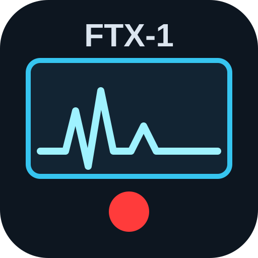

На выбранном порту и скорости, при остановленном соединении. Для старых моделей — ручной выбор.
В режиме Hamlib PTT управляется через CAT. Некоторые расширенные функции могут быть недоступны.
Для трансиверов с аппаратным панорамным приёмником. Читает интерфейс FTDI FT4222 A (не CAT-порт). Библиотеки FTDI не входят в поставку: скачайте LibFT4222/D2XX с сайта FTDI и положите их в папку ftdi рядом с программой (или укажите пути ниже). Без библиотек/поддерживаемого трансивера пульт автоматически использует обычный звуковой водопад. На реальном оборудовании пока не проверялось.
При обнаружении FT-710/FTDX10/FTDX101 и отсутствии библиотек программа попробует скачать сторонние файлы FTDI с официального сайта в папку ftdi (в фоне, без блокировки работы). Адреса загрузки версионированы и могут устареть — если не получилось, скачайте вручную по ссылкам в документации. Можно отключить галочку. На Raspberry Pi нужны библиотеки ARM64 (aarch64).